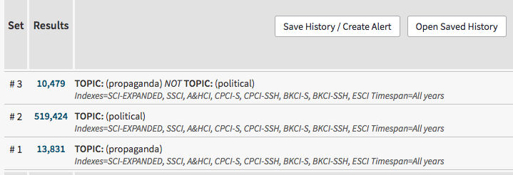
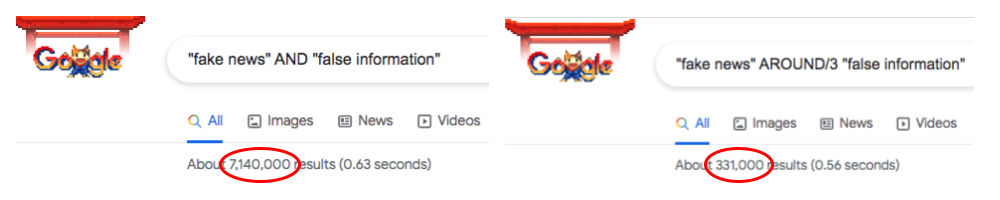

Öğrenen Sürümü
Eğitici Sürümü
Öğrenen Sürümü
Eğitici Sürümü
Modül 14: Etkili Arama Stratejileri
Modülün Tanımı
Bu modülün ana amacı, etkili bir arama stratejisi geliştirmek için gerekli olan bazı arama fonksiyonlarını ve işleçleri açıklamaktır.
İkincil amaç ise Modül içeriğini öğrenenleri eğitmek için kullanmak isteyen eğitmenlere rehberlik etmektir.
Bu amaçlardan hareketle bu modülde; Boole mantığı, denetimli söz dağarcıkları (controlled vocabularies), alan araması (field searching), yakınlık arama (proximity searching), kesme (truncation) ve joker (wildcards) karakterleri, aramaları kısıtlama sınırları ve konunun nasıl öğretileceğine ilişkin yönergeler ele alınmaktadır.
Bu Modülü başarıyla tamamlayanlar,
- etkili bir arama stratejisinin neden önemli olduğunu anlar,
- Boole mantığını kavrar ve işleçleri tanımlar (VE, VEYA, DEĞİL - AND, OR, NOT),
- denetimli söz dağarcıklarının (controlled vocabularies) önemini anlar,
- alan aramasını (field searching) anlar ve temel alanları tanımlar,
- yakınlık işleçlerini tanımlar ve ayırt eder,
- kesme (truncation) ve joker (wildcards) karakterlerinin neden ve nasıl kullanılacağını anlar.
Ek olarak, bu modülü başarıyla tamamlayan eğitmenler, konuyu nasıl öğreteceklerini anlarlar.
Modülün Yapısı
Bu Modül aşağıdaki bölümlerden oluşmaktadır:
- Modülün Tanımı (amaç, içeriğin tanımı ve öğrenme çıktıları)
- Modülün Yapısı
- Öğrenenler için Yönerge
- Eğitmenler için Yönerge (hazırlık, kullanılacak yöntemler ve eğitmenler için ipuçları)
- İçerik (çalışma materyalleri ve alıştırmalar)
- Test
- Kaynakça (yararlanılan kaynaklar ve önerilen kaynaklar ile videolar)
Modülün ana hedefleri, içerik ve öğrenme çıktıları Modülün Tanımı bölümünde açıklanmıştır. İçerik, tüm çalışma materyallerini ve ilgili alıştırmaları içerir. Test, öğrenenlerin kendilerini ve ilerlemelerini test edebilmeleri için hazırlanmıştır. Genellikle çoktan seçmeli veya doğru/yanlış sorularından oluşur. Kaynakça, yararlanılan kaynaklar ve önerilen kaynaklar şeklinde iki bileşenden oluşur. İçerik hazırlanırken yararlanılan ve atıf yapılan kaynaklar Kaynakça başlığı altında listelenmiştir. Ek Kaynakça, konuyla ilgili daha fazla bilgi edinmek isteyenler için okunması/izlenmesi önerilen kaynaklar ve videoların listesinden oluşur. Öğrenenler için Yönerge, öğrenenlere yönelik talimat ve önerileri içerir. Eğitmenler için Yönerge, eğitimin farklı aşamalarında eğitmenleri yönlendirir ve konunun öğretiminde kullanılacak faydalı ipuçları sağlar.
Öğrenenler için Yönerge
Öğrenenlerden içeriği dikkatle okumaları, önerilen videoları izlemeleri ve alıştırmaları yapmaları beklenmektedir. Daha fazla bilgi gereksinimi duydukları konularda kaynakçalarda listelenen kaynaklara başvurabilirler. İçerik üzerindeki çalışmalarını tamamladıktan sonra, ilerlemelerini değerlendirmek için modül sonundaki testi yapmaları önerilir.
Eğitmenler için Yönerge
Bu bölüm, ele alınan konunun (etkili arama stratejilerinin kullanımı) nasıl öğretileceğine ve Modül içeriğinin bu amaçla nasıl kullanılabileceğine ilişkin eğiticilere yönelik öneri ve ipuçları içerir. Test sonuçlarına göre gerekirse çalışma materyali yeniden gözden geçirilebilir.
Hazırlık
Görsel materyallerle desteklenen ve veri tabanı ya da arama motorlarında yapılan arama sonuçlarını gösteren bir sunum (PowerPoint/Prezi/Canva) hazırlanması önerilir. Kurs sırasında veri tabanları/arama motorları üzerinde gerçek zamanlı uygulama yapılması/yaptırılması önerilir.
Başlarken
Konuya ısındırmak amacıyla başlangıçta Kahoot veya Mentimeter gibi araçlar kullanılarak katılımcılara konuyla ilgili genel ve kısa bazı sorular (3 ile 5 soru) yöneltilebilir. Böyle bir başlangıç öğrenenlerin konuyla ilgili mevcut bilgi düzeyleri hakkında bilgi sağlayacağı gibi bir motivasyon kaynağı olarak da kullanılabilir. Bu amaçla kullanılabilecek sorulara bazı örnekler şunlar olabilir: Boole işleçleri nelerdir? Kesme işaretleri (truncations) nelerdir? Sözcük grubu (phrase) aramasında "tırnak işaretini" nasıl kullanabiliriz?
Kullanılacak Yöntemler
Eğitim sırasında çeşitli öğretim yöntemleri bir arada kullanılabilir:
- Ders anlatma
- Grup çalışması
- Bireysel çalışma
- Kendini yansıtma
Eğitmenler için İpuçları
Isınma
Katılımcıları sürece dahil etmenin ve öğrenecekleri şeyler hakkında ortak beklentiler oluşturmanın etkili bir yolu konu hakkında birkaç ön soru sormaktır. Örneğin, öğrenenlerden önceden belirlenmiş bir veya birkaç konu/sorgu ile ilgili çevrimiçi arama yapmaları istenebilir. Etkinlik şu şekilde gerçekleştirilebilir:
- farklı arama stratejilerini uygulamayı gerektiren sorgular hazırlayın
- her bir sorgu için uygun veri tabanı seçin
- katılımcılardan bu sorguları yanıtlamak için çevrimiçi arama yapmalarını isteyin
- katılımcılardan arama stratejilerini ve sonuçlarını kaydetmelerini isteyin
- katılımcılardan ulaştıkları sonuçları diğer katılımcılarla paylaşmalarını ve tartışmalarını isteyin.
Arama sonuçlarının paylaşılmasından sonra, katılımcıların farklı arama stratejilerinin farklı sonuçlar getirdiğini anladıklarından emin olun. Öğrenenler, etkili arama stratejilerinin faydalarını anlamalıdır.
Dersin Amacının Belirtilmesi
Dersin amacı (etkili arama stratejilerini açıklamak ve bu stratejilere başvurmanın arama sonuçları üzerindeki etkisini anlamak) açık hale getirilmelidir. Isınma sorularının ardından hedefleri netleştirmek daha kolay olacaktır.
Ders İçeriğinin Sunulması
İçeriği sunarken, öğrenenlerle etkileşime girdiğinizden emin olun ve onları aktif katılıma teşvik edin.
Dersten Önce:
- Dersten önce, katılımcıların uygulama yapması için sorgular hazırlayın (sorguları belirleyin, veri tabanlarında ilgili aramaları yapın, aynı sorgular için farklı veri tabanlarını deneyin)
- Dersten önce, uygulama için hangi kaynakların ve veri tabanlarının kullanılacağına karar verin.
Ders Sırasında:
- Dersin başında katılımcılara etkili bir arama stratejisinin neden önemli olduğunu sorun
- Dersin başında katılımcılara etkili bir arama stratejisinin bilgi erişim üzerindeki etkisinin ne olduğunu sorun
- Dersin başında, katılımcılardan verilen sorgular hakkında arama yapmalarını ve sonuçları kaydetmelerini isteyin.
Dersten Sonra:
- Konuları açıkladıktan sonra, katılımcılardan dersin başında yaptıkları aramaları tekrar yapmalarını isteyin. Örneğin, Boole işleçlerini açıkladıktan sonra, katılımcılardan Boole işleçlerini kullanarak aynı aramayı yapmalarını isteyin
- Önceki kaydedilen sonuçları yeni sonuçlarla karşılaştırın
- Bazı teknikler (örneğin kesme işaretleri, joker işaretleri vb.) veri tabanına göre farklılık gösterebilir. Aynı sorguları farklı veri tabanlarında gerçekleştirin
- Sonuçları katılımcılarla tartışın
Öneriler:
- Derslerinizi uygulama örnekleri ve alıştırmalarla desteklediğinizden emin olun.
Sonuç
Dersin kısa bir özetini yapın ve vermek istediğiniz en önemli içerik ve uygulamaların öne çıkmasını sağlayacak birkaç soru sorun. Örneğin:
Etkili arama stratejileri neden önemlidir?
Tartışmadan sonra, arama stratejilerinin bilgi erişim için çok önemli olduğunun ve araştırmacılara aramalarını sürdürmek için kapsamlı bir plan sağladığının anlaşıldığından emin olun. Etkili arama stratejilerinin bilincinde olmak, katılımcıların bilgi ihtiyaçlarını eksiksiz ve etkin bir şekilde karşılamasını sağlayacaktır.
İçerik: Etkili Arama Stratejileri
Giriş
Haber okuryazarlığı, haberin toplumdaki rolünün anlaşılmasını, haber arama motivasyonunu ve haber bulma, tanımlama, ayırt etme, eleştirel olarak değerlendirme ve oluşturma becerisini içerir (Malik, Cortesi & Gasser, 2013, s. 8-9). Daha genel olarak ifade etmek gerekirse: Okuryazar olmak için (bilgi, haber, veri, finans vb.), insanların ihtiyaçlarını karşılayacak bilgileri bulma bilgi ve becerilerine sahip olmaları gerekir.
Araştırma konusuyla ilgili bilgileri bulmak için etkili bir arama stratejisi önemlidir. Genel anlamda, bir arama stratejisi, araştırma hedeflerine ulaşmak için kapsamlı bir plandır. Çevrimiçi aramaya (etkili bir arama stratejisi uygulamaya) başlamadan önce, sorgunun bilinen bir öğe mi (known-item) yoksa bir konu araması mı (subject search) olduğuna karar vermek gerekir. Bilinen öğe araması, gerçek (veya bilinen) bir kaynak için yapılan sorgudur. Bu tür bir aramada, yazar adı, başlık, yayın adı vb. gibi bir öğeyi tanımlayan bilgiler kullanılır. Konu araması, bir konuyla ilgili bilgi aramak için yapılan sorgudur. "Bu en zor arama türüdür çünkü neye ihtiyacınız olduğunu ve neyi güvenle reddedebileceğinizi tam olarak belirleyemezsiniz"(Fulton & McGuinness, 2016, s.123). Etkili arama stratejilerinin özellikle bu tür aramalar için önemli ve belirleyici olduğunu belirtmekte fayda vardır.
Sorgu tipine karar verildikten sonra ilgili kaynak/veritabanı seçilmelidir (ayrıca bakınız Modül 12). Bundan sonra faset analizi ve mantıksal birleştirme yapılmalıdır. “Faset, tek bir kavramı veya fikri anlatan bir kelime veya kısa bir ifadedir (short phrase)” (Markey, 2019, s. 98). Örneğin: “Sahte haber” ile “sosyal medya” arasında ilişki var mıdır sorgusunun fasetleri sahte haber ve sosyal medyadır.
Ön araştırma hazırlığından sonra etkili bir arama stratejisi uygulanmalıdır. Bu bölümde, etkili bir arama stratejisi geliştirmek için gerekli bazı arama fonksiyonları ve işleçleri incelenecektir.
Boole Mantığı
İlgili öğelere erişmek için eş anlamlıları ve farklı kavramları bir araya getirmeye imkân sağlayan Boole işleçleri veri tabanlarının çoğunda ve arama motorlarında kullanılır (Alexander, 2003, s. 62).
Boole mantığı, bir aramadaki terimler arasındaki mantıksal ilişkiyi ifade eder. AND, OR ve NOT temel Boole işleçleridir. Bu işleçler aramayı genişletir veya daraltır.
- AND iki terimin arasına eklenir: Bu işleç, arama sistemine her iki terimi de içeren kaynakları bulmasını söyler,
- OR iki terimin arasına eklenir: Bu işleç, arama sistemine her iki terimden birini içeren kaynakları bulmasını söyler,
- NOT iki terimin arasına eklenir: A ve B, bu işleç arama sistemine ikinci terim B'yi içeren kaynakları ilk terim A'dan hariç tutmasını söyler (Markey, 2019, s. 100).
Örnek 1: Web of Science Veri Tabanında Konu (Topic) Araması Yapmak
Arama Terimleri: misinformation, disinformation
Boole İşleçleri: AND, OR, NOT

Yukarıdaki aramada:
# 1 Başlık, öz ve anahtar kelime alanlarında (topic) misinformation geçen sonuçları getirecektir.
# 2 Başlık, öz ve anahtar kelime alanlarında (topic) disinformation geçen sonuçları getirecektir.
# 3 Başlık, öz ve anahtar kelime alanlarında (topic) misinformation ve disinformation geçen sonuçları getirecektir.
# 4 Başlık, öz ve anahtar kelime alanlarında (topic) arama terimlerinden herhangi birinin geçtiği (misinformation veya disinformation) ya da her ikisinin de geçtiği (misinformation ve disinformation) sonuçları getirecektir.
# 5 Başlık, öz ve anahtar kelime alanlarında (topic) yalnızca misinformation geçen ama disinformation geçmeyen sonuçları getirecektir.
Örnek 2: Web of Science Veri Tabanında Konu (Topic) Araması Yapmak
Arama Terimleri: posttruth, post truth, post-truth
Boole İşleçleri: OR

Yukarıdaki aramada:
# 1 Başlık, öz ve anahtar kelime alanlarında (topic) posttruth geçen sonuçları getirecektir.
# 2 Başlık, öz ve anahtar kelime alanlarında (topic) “post truth” geçen sonuçları getirecektir.
# 3 Başlık, öz ve anahtar kelime alanlarında (topic) post-truth geçen sonuçları getirecektir.
# 4 Başlık, öz ve anahtar kelime alanlarında (topic) posttruth, “post truth” veya post-truth arama terimlerinden herhangi birisininin geçtiği ya da posttruth ve ”post truth”; posttruth ve post-truth; “post truth” ve post-truth gibi herhangi ikisinin geçtiği ya da her üç arama teriminin de aynı dokümanda geçtiği sonuçları getirecektir.
Örnek 3: Web of Science Veri Tabanında Başlık (Title) Alanında Arama Yapmak
Arama Terimleri: www, world wide web, “world wide web”
Boole İşleçleri: OR

Yukarıdaki aramada:
# 1 Başlık (Title) alanında www geçen sonuçları getirecektir.
# 2 Başlık (Title) alanında world wide web geçen sonuçları getirecektir.
# 3 Başlık (Title) alanında world wide web ve www’nin birlikte geçtiği ya da bu terimlerden sadece birinin geçtiği sonuçları getirecektir.
# 4 Başlık (Title) alanında “world wide web” ve www’nin birlikte geçtiği ya da bu terimlerden sadece birinin (“world wide web” veya www) geçtiği sonuçları getirecektir.
Örnek 4: Web of Science Veri Tabanında Konu (Topic) Araması Yapmak
Arama Terimleri: propaganda, political
Boole İşleçleri: NOT

Yukarıdaki aramada:
# 1 Başlık, öz ve anahtar kelime alanlarında (topic) propaganda geçen sonuçları getirecektir.
# 2 Başlık, öz ve anahtar kelime alanlarında (topic) political geçen sonuçları getirecektir.
# 3 Başlık, öz ve anahtar kelime alanlarında (topic) propaganda arama teriminin geçtiği ama political teriminin geçmediği sonuçları getirecektir.
İç İçe Yerleştirme (Nesting)
İç içe yerleştirme (nesting), arama mantığını ve Boole işleçlerinin gerçekleştirileceği sırayı (öncelik sırasını) düzenlemek için kullanılır. Genellikle parantez kullanılarak gösterilir (Alexander, 2003, s. 62). İç içe yerleştirmede benzer kavramları bir arada tutmak için parantez kullanılır ve sisteme önce parantez içindeki arama terimlerinin işleme alınması söylenir. Sistem, Boole komutunu önce en içteki parantez içindeki ifadeyi okuyarak, ardından en dıştaki parantezlere doğru okumaya devam ederek işletir.
Örnek 1: Topic = ((news OR media) AND literacy) NOT "new media"
Yukarıdaki örnekte veri tabanı önce “news literacy” VEYA “media literacy” konulu dokümanları bulacak ve "new media" terimini içeren dokümanları erişim çıktılarının dışında tutacaktır.
Örnek 2: Web of Science Veri Tabanında Konu (Topic) Araması Yapmak
Arama Terimleri: news literacy, media literacy, information literacy, post-truth, fake news, new media
Boole İşleçleri: AND, OR, NOT, NESTING

Yukarıdaki aramada:
# 1 numaralı sorguda önce içinde “news literacy” ya da “media literacy” terimlerinden en az birinin geçtiği belgeler belirlenir, daha sonra bu belgelerde aynı zamanda “information literacy” teriminin geçip geçmediğine bakılır ve geçenlere erişilir.
# 2 numaralı sorguda önce “news literacy” ve “information literacy” ya da “media literacy” ve “information literacy” konulu (topics) belgeler bulunur ve “fake news” veya post-truth veya "new media” konulu belgeler kapsam dışı bırakılır.
Alıştırma
- Aşağıdaki sorguları kullanarak bir veri tabanında arama yaptığınızı düşünün. Bu sorguların kullanılması durumunda erişilen belgelerin içeriğini tanımlamaya çalışınız. Sorguları disiplinlerarası bir veri tabanında gerçekleştiriniz (örneğin ScienceDirect, Academic Search Ultimate).
- magazines OR journals NOT books
- (magazines OR journals) NOT books
- (magazines OR journals) AND books
- magazines OR (journals AND books)
- (magazines OR (journals NOT books)) AND libraries
- İlginizi çeken bir konu ile ilgili birkaç terim seçiniz. Bu terimleri kullanarak arama yapmak için Boole işleçlerinin yardımıyla farklı kombinasyonları deneyiniz.
Denetimli Söz Dağarcıkları (Controlled Vocabularies)
Veri tabanları, belgeleri dizinlemek için denetimli söz dağarcıkları (controlled vocabularies) kullanırlar ve bu arama açısından veri tabanları ve Web arasındaki en önemli farklardan biridir (Fulton & McGuinness, 2016, s.131).
Denetimli söz dağarcığı, “içeriği dizinlemek ve/veya tarama (browsing) veya arama (searching) yoluyla içeriğe erişmek için kullanılan sözcük ve sözcük öbeklerinin (phrase) organize bir düzenlemesidir” (Harpring, 2010). Başka bir deyişle, denetimli söz dağarcığı eş anlamlı sözcükler dizisi ya da tercih edilen terimler listesi şeklinde eşdeğer terimlerin listesidir. Geniş (broader), dar (narrower), ilgili (related) ve yerine kullanılan (used for) terimler ile terimler arasındaki hiyerarşik ilişkileri tanımlar (Morville ve Rosenfeld, 2007, s. 194). Arama etkinliğini (efficiency) en üst düzeye çıkarmak ve ilgili belgelere erişmek için denetimli söz dağarcığının kullanılması önerilir. Kullanıcının seçtiği terim ile sistem tarafından kullanılan terimin aynı olmaması durumunda, veri tabanları sistemde kullanılan uygun terimlerin veya tanımlayıcıların seçimini kolaylaştırmak için çevrimiçi gömü (thesaurus)/konu terimleri (subject terms)/ dizinler (indexes) sağlar (Fulton & McGuinness, 2016, s. 132). Denetimli söz dağarcıkları, aynı zamanda konu başlıkları (subject headings), gömü (thesaurus), tanımlayıcı (descriptors) ya da otorite kontrol (authority control) olarak bilinir (Bell, 2015, s. 33). "Gömü (thesaurus), belirli bir denetimli söz dağarcığı için resmi (formal) bir terimdir... Bir gömü terimler arasındaki ilişkileri (daha geniş, daha dar, ilgili) göstererek konu başlıklarının listesini hiyerarşik bir biçimde sağlayabilir ve kullanılacak en iyi terimlere işaret edebilir” (Bell, 2015, s. 48).
- Geniş terim (Broader terms - BT) gömüdeki iki denetimli söz dağarcığı terimi arasındaki hiyerarşik ilişkiyi gösterir. Bütünü (whole) ya da tanımlı semantik kavramın daha geniş bir kategorisini (genus) belirten geniş terim ya bir bütün-parça (whole–part) ya da cins-tür (genus–species) ilişkisini ifade eder (Markey, 2019, s. 367).
- Dar terim (Narrower terms - NT) gömüdeki iki denetimli söz dağarcığı terimi arasındaki hiyerarşik ilişkiyi gösterir. Parçayı (part) ya da türü (species) belirten dar terim ya bir bütün-parça (whole–part) ya da cins-tür (genus–species) ilişkisini ifade eder (Markey, 2019, s. 373).
- İlgili terim (Related terms - RT) “gömüdeki başka bir denetimli söz dağarcığı terimiyle koordineli olan denetimli söz dağarcığı terimini gösterir. Her iki terim de hiyerarşide aynı seviyede olduğu için hiyerarşik olarak ilişkili değildir. Çağrışımsal ilişki (associative relationship) olarak da adlandırılır” (Markey, 2019, s. 375).
- Yerine kullanılmış (Used for - UF) “bir otorite kaydında, kaydın onaylı (authorised) adı, konusu veya başlığı için kullanılmayan eş anlamlıların bir listesini” gösterir (Markey, 2019, s. 379).
Örnek 1: Library, Information Science & Technology Gömüsünde (Thesaurus) Tarama
Terim: literacy

Literacy, Library, Information Science & Technology veri tabanındaki bilgi öğelerini (information items) tanımlamak için kullanılan geçerli bir arama terimidir. Education, literacy için daha geniş bir terimdir (broader term); computer literacy ve metaliteracy daha dar terimlere (narrower term) örnektir. Illiterate persons ve readership ilgili terimlere (related terms) bazı örneklerdir. Literacy, illiteracy (Used for) yerine kullanılmalıdır.
Denetimli Söz Dağarcıklarının avantajları Bell (2015, s. 33-34) tarafından şu şekilde belirtilmiştir:
- Bir terimin tüm olası eş anlamlılarını veya alternatif yazımlarını düşünmekten kurtarır. Örneğin, “clothing” ile ilgili tüm belgeler için konu başlığı clothing olarak belirlenmişse, dress, costume, outfit gibi ilgili diğer terimleri düşünmenize gerek yoktur.
- Denetimli söz dağarcığının kullanılması, aramanızı daha eksiksiz hale getirmelidir (eğer dizinciler terimlere konu başlığı atama konusunda güvenilir/tutarlıysa).
- Konu başlıkları listeleri, birden fazla anlamı olan kelimelerle ilgili belirsizliği giderir (örneğin, mercury—a planet, a car, a god, or a metal?). Otorite kontrolü (authority control), yazar adları için, birden fazla adla bilinen bir yazara bakmanın bir yolunu sağlar (örneğin, Mark Twain/Samuel Clemens).
- Bilinmeyen bir konu alanına güvenli ve yararlı bir giriş noktası sağlar. Konu hakkında hiçbir şey bilmeseniz bile, konu listesindeki terimlerin doğru ve uygun olduğuna dair güvenceniz vardır. Listeye göz atarak ve terimler hakkında bir fikir edinerek (özellikle "bakınız (see)" veya "kullan (use)" veya "ayrıca bakınız" referansları varsa), bir arama stratejisi geliştirmenize veya daraltmanıza yardımcı olacak fikirler edinebilirsiniz.
Alan Araması (Field Searching)
Alan araması, arama yapan kişinin arama terimlerini ve sözcük öbeklerini (phrases) belirli alanlarla sınırlandırmasına ve daha kısa ve ilgili sonuçlar bulunmasına olanak tanır (Alexander, 2003, s. 62). Aramayı belirli bir alanla sınırlamak, örneğin belirli bir ad için yalnızca "yayın adı" alanını aramak, sistemin arama işlem süresini azaltmaya da yardımcı olabilir.
Veri tabanı kayıtları, kaynaklar hakkındaki bilgileri düzenlemek ve yazar, başlık, özet gibi belirli bir veri türünü tanımlamak için alanları kullanır. “Arama sistemleri, alanlardaki değerleri (values) dizinlediğinde, değerlerin çekildiği alanların kaydını tutar” (Markey, 2019, s. 112).
Alan adları veri tabanına bağlı olarak değişebilir. Alan adlarına bazı örnekler: yazar (author), yazarın kurumu (author affiliation), başlık (title), kaynak (source) (yayın adı, dergi veya kitap başlığı), anahtar kelime (keywords), konu ( subject, topic), fon sağlayıcı (funding agency), yıl (year) gibi. Bazı veri tabanları arama yapmak için alan kodlarını kullanır. Örneğin; AU: Author; TS: Topic gibi. Bu kodlar veri tabanına özeldir.
Örnek 1: IEEE Xplore Veri Tabanındaki Alan Adları ve Açıklamaları
|
Field Name |
Definition |
|
Abstract |
Brief summary or statement of the contents of a journal article, conference paper, standard, book, book chapter, or course. |
|
Author Affiliation |
Institutional affiliation of authors listed in documents (university, government agency, corporation, etc.). |
|
Author Keywords |
Terms provided by the author which describe the topics or subjects of the document. |
|
Authors |
Name of the author or authors listed in the document. |
|
Document Title |
Title of an individual document (journal article, conference paper, standard, book chapter, or course). |
|
Full Text & Metadata |
Full Text refers to the text of a paper, article, standard, etc. Metadata is the detailed information that describes the full text, like author names, publish date, and DOI. |
|
Index Terms |
Combined field which allows users to search the Author Keywords, IEEE Terms, INSPEC Terms, and Mesh Terms. |
|
Publication Title |
Title of a publication (journal, conference, or book). |
Kaynak: IEEE Xplore: Resources and Help
Örnek 2: Web of Science veri tabanında alan adları ile arama yapmak
2.1. Web of Science veri tabanında alan adlarını (konu (topic), başlık (title), yazar (author), yayın adı (publication name), yayımlanma yılı (year published), doküman türü (document type) ve organizasyon (organisation-enhanced)) kullanarak arama yapmak

2.2. Web of Science veri tabanında yapılan yukarıdaki aramanın sonucu

Yakınlık Araması (Proximity Searching)
Yakınlık araması, A teriminin B teriminden ne kadar uzakta olması gerektiğini belirtmenize olanak tanır. Örneğin, Avrupa Birliği'nde veri koruması (data protection in the European Union) hakkında bir şey bulmaya çalışıyorsanız, aşağıdaki gibi bir arama stratejisi:
TS = "European Union" AND "data protection"
ilgili sonuçlar mutlaka getirecektir ama birçok ilgisiz sonuç getirme olasılığı da vardır. Çünkü arama terimleri erişilen belgenin herhangi bir yerinde geçebilir. Örneğin:

Veri tabanı sistemlerinin çoğu, kişinin arama terimleri arasındaki ilişkinin kurallarını belirlediği daha sofistike arama stratejileri oluşturmasına izin verir. Bir başka ifadeyle, erişim sağlanan belgelerde arama terimlerinin birbirine ne kadar yakın olması gerektiği ve bazen de hangi sırada geçmesi gerektiği belirtebilir. Bu yakınlık araması (proximity searching) olarak bilinir (Bell, 2015, s. 49). Yakınlık araması, erişilen belgelerde daha fazla duyarlık (precision) elde edilmesine yardımcı olur.
Yakınlık araması, yakınlık işleçleri olarak adlandırılan özel işleçler kullanır.
Yakınlık İşleçleri (Proximity Operators)
Markey’e (2019, s. 375) göre yakınlık işleci, bir arama sisteminde aşağıdaki iki kriteri belirleyen bir işleçtir:
- Metinde kelimelerin ne kadar yakın geçmesi gerektiği
- Kelime sırasının önemli olup olmadığı
Yakınlık işleçleri bir aramayı daraltmaya veya genişletmeye ve arama sonuçlarını iyileştirmeye yardımcı olur. Örneğin bir veri tabanında “fake news” NEAR3 “false information” ya da “fake news” AROUND (3) “false information” şeklinde yapılan bir arama “fake news” AND “false information” şeklinde yapılan aramadan daha spesifik sonuçlar getirecektir.
İşleçlerin adları ve sözdizimi (sentaks) sistemden sisteme değişebilmektedir.
Bazı örnekler:
- WITHIN → Wn
misinformation W2 social media
Yukarıdaki arama; misinformation arama terimi social media arama teriminin iki kelime kadar uzağında (within) ise erişim sağlanmalıdır anlamına gelir. Örneğin misinformation W2 social media şeklinde girilen bir sorgu EBSCOhost veri tabanında şu sonuçları getirecektir:
… misinformation sharing on social media…
…misinformation on social media...
- PRE → Pre/n veya P/n
"European Union" PRE/5 framework
Yukarıdaki arama; European Union arama teriminin framework teriminden önce ve en fazla 5 kelime uzağında geçmesi gerektiği anlamına gelir. Örneğin, "European Union" PRE/5 framework şeklinde girilen bir sorgu ProQuest veri tabanında şu sonuçları getirecektir:
...in the European Union Legal Framework…
…European Union and Turkey in the Framework of …
...European Union Common Agricultural Policy under WTO Framework...
- NEAR → Near/n veya N/n veya Nn
disadvantaged NEAR/5 children
Yukarıdaki arama; kelime sırası önemli olmaksızın, disadvantaged ve children arama terimlerinin en fazla 5 kelime arayla geçmesi gerektiği anlamına gelir.
Örneğin, disadvantaged NEAR/5 children şeklinde girilen bir sorgu IEEE Xplore veri tabanında şu sonuçları getirecektir:
...school for children from disadvantaged circumstances
… disadvantaged primary school children..
...disadvantaged, preschool, gifted children…
…. children from among culturally different/educationally disadvantaged….
Örnek 1: Web of Science Veri Tabanında Konu (Topic) Araması Yapmak
Arama Terimleri: “fake news”, “false information”
Yakınlık İşleci: NEAR

Yukarıdaki aramada:
# 2 kelime sırasına bakılmaksızın, “fake news” ve “false information” terimlerinin arasında en fazla üç kelimenin geçtiği sonuçları getirecektir.
Örnek 2: Google’da Arama Yapmak
Arama Terimleri: “fake news”, “false information”
Yakınlık İşleci: AROUND

Bazı veri tabanları ve kaynaklarda, yakınlık işleci adjacency ve nearby şeklinde ikiye ayrılmaktadır. Aralarındaki fark kelime sırasıdır.
Adjacency (yakınlık) işleçleri arama terimlerinin birbirine yakın (adjacent) olması gerektiğini ve kelime sırasının önemli olduğunu belirtir (Markey, 2019, s. 365). Within (W), Pre, ve ~ adjacency (yakınlık) işleçlerine örnek gösterilebilir.
“Bandwagon effect” ya da “bandwagon worker effect” ile eşleşen “effect of bandwagon” ile eşleşmeyen sonuçlara erişmek için örnek aramalar:
EBSCOhost: bandwagon W2 effect
ProQuest: bandwagon PRE/2 effect
Taylor & Francis Online: “bandwagon effect” ~2
Nearby (yakınlık) işleçleri, arama kelimelerinin araya giren bir veya daha fazla kelimeyle ayrıldığını ve arama kelimelerinin sırasının önemli olmadığını belirtir (Markey, 2019, s. 373). NEAR, N ve ~ Nearby (yakınlık) işleçlerine örnek gösterilebilir.
“European Union general data protection”, “data protection in the European Union”, “European Union developments on data protection” ile eşleşen sonuçlara erişmek için örnek aramalar:
EBSCOhost: “data protection” N2 “European Union”
ProQuest: bandwagon NEAR/2 effect
Taylor & Francis Online: "data protection" "european union"~2
Sözcük Öbeği Araması (Phrase Searching)
Sözcük öbeği (phrase) araması, sözcük öbeği (örneğin, “dijital okuryazarlık”) olarak aramak istediğiniz terimlerin tırnak işareti içine alınarak belirtilmesidir. Arama terimlerinizin, tam olarak belirtildiği şekilde eşleştirmesini sağlar.
Bu yaklaşım, her iki terimin de geçtiği ama tam eşleşme şeklinde doğrudan birlikte geçmediği sonuçları kapsam dışı bırakarak aramayı daraltmaya yardımcı olur (Fulton ve McGuinness, 2016, s. 136). Birçok veri tabanı (EBSCO, WoS, JSTOR vb.) ve Google, Bing vb. arama motorlarının tümü, aranacak terimlerin tam olarak belirtilen sözcük öbeği şeklinde aranması için çift tırnak içine alma kuralına uyar (Bell, 2015, s. 53).
- ScienceDirect veya Scopus gibi bazı veri tabanlarında, sözcük öbeği aramasında noktalama işaretleri yok sayılır. Örneğin, aşağıdaki gibi bir sözcük öbeği araması:
”heart-attack” ve “heart attack”
aynı sonuçları getirecektir.
- Scopus gibi bazı veri tabanlarında aradığınız şeyin tam olarak eşleşmesi için parantez {} kullanılmalıdır. Örneğin, parantez {} kullanılarak yapılan aşağıdaki gibi tam eşleşme araması:
“heart attack” ve {heart attack}
aynı sonuçları getirmeyecektir. Çünkü “heart attack” sorgusu “heart attacks” içeren sonuçları da getirir fakat {heart attack} sorgusu “heart attacks” içeren sonuçları getirmez.
Kesme ve Joker Karakterler
Kesme (Truncations)
Kesme, aynı terimin türevlerini, örneğin çoğul halini, arayarak aramayı genişletmenin etkili bir yoludur. Kesme, bir sözcük kökü ile arama yapılmasına ve bu harflerle başlayan herhangi bir sözcüğe erişime izin verir (Bell, 2015, s. 54). Böyle bir arama yapmak için *, ?, $ gibi kesme sembolleri sözcüğün köküne eklenir.
Örneğin:
- library, libraries, librarian, ve librarianship terimlerini içeren belgelere erişmek için kelime köküne yıldız (asterisk) işareti (*) eklenir: librar*
- information behaviour, information behaviour, informational behaviour, informational behaviour, information-behaviour, informativeness behaviour terimlerini içeren belgelere erişmek için kelime köklerine yıldız (asterisk) işareti (*) eklenir: informa* beha*
Kesme sembollerinin veri tabanına veya arama motoruna göre değişebileceğinin farkında olunmalıdır (Fulton & McGuinness, 2016, s. 137). En sık kullanılanlar:
- *
- ?
- !
- $
Kök başlı başına bir kelime olduğunda, o kelime/kök de arama sonuçlarına eklenecektir (Bell, 2015, s. 54). Örneğin:
- journal* şeklinde yapılan bir arama; journal, journals, journalism, journalist, journalists, journalists’, journalistic, journaling kelimelerini içeren kayıtlara erişecektir.
Kelimeleri çok fazla kesmek belirli bir konuya ait olma (specificity) ya da belirgin olma niteliğini düşürür. Örneğin,
- cat* şeklinde bir arama cat, catalyst, catalogues, catastrophic vb. terimlerin geçtiği kayıtları getirecektir. Eğer “memeli hayvan” olan cat (kedi) ile ilgili bir arama yapılmak isteniyorsa, cat ya da cats şeklinde bir sorgu daha doğru sonuçlar getirecektir.
Bazı veri tabanlarında kelimelerin çoğul halleri ve yazım çeşitleri otomatik olarak dahil edilir. Örneğin ScienceDirect veri tabanında:
“color code” ya da “colour code” ya da “colour codes”
aynı sonuçları getirecektir.
Joker Karakterler (Wildcards)
Joker karakterler, kesme karakterlere benzer şekilde çalışır. *, ?, ! gibi semboller, farklı şekillerde yazılabilen terimleri aramak için kullanılır. Amerikan ve Birleşik Krallık İngilizcesinde yazımları farklı olan terimlerin (licence ve license gibi) aranmasında faydalıdır.
Genellikle tek bir harfin yerine terim içerisine bir sembol eklenir (Fulton ve McGuinness, 2016, s. 13).
Örneğin,
- “?” (joker) kullanımı → licen?e şu sonuçları getirecektir → licenCe, licenSe
Bazı sözcüklerin tekil ve çoğul hallerine erişmek için "?" (joker) kullanılabilir. Örneğin hem woman hem de women için::
- wom?n → womAn, womEn
Joker karakterler sıklıkla yalnızca bir harfin yerine kullanılır (Bell, 2015, s. 56), ancak bazı veri tabanlarında "sıfır-bir" karakter yerine ya da hiç karakter içermeme de dahil olmak üzere herhangi bir karakter grubu yerine kullanılabilir.
Örneğin, Web of Science veri tabanında joker karakter kullanımı:
- Yıldız imi (*), herhangi bir harf grubunu temsil eder, buna hiç harf olmaması da dahildir.
f*food fastfood, futurefood, frankenfood, fishfood, fitfood
- Soru işareti (?) herhangi bir (tek) harfi temsil eder.
organi?e organiSe, organiZe
- Dolar işareti ($) sıfır ya da bir harfi temsil eder.
colo$r color, coloUr
Joker karakterler bir arama sözcüğünde birleştirilebilir. Örneğin,
- organi?ation* → organisation, organization, organizations, organizational
Notlar
1- Veri tabanına bağlı olarak joker karakterler (wildcards) yerine kullanılan sembollerin kesme (truncation) karakterlerle aynı olduğunu ama sonuçların farklı olduğunu dikkate alınız. Örneğin bir veri tabanı kesme (truncation) için “!”, joker (wildcards) için “*” sembollerini kullanırken bir başkası tam tersi şeklinde kullanabilir (Bell, 2015, s. 56).
2- Bazı veri tabanlarında joker (wildcards) ve kesme (truncation) karakterler arasında fark olmadığını dikkate alınız. Örneğin, Scopus veri tabanında joker karakter olarak “*” kullanmak,
criminal* liab*
criminally liable ve criminal liability gibi sonuç getirecektir.
3- Bazı veri tabanlarının sözcüklerin çoğul hallerini ve yazım biçimlerini otomatik olarak dahil ettiğini dikkate alınız. Örneğin,
heart attack
heart attacks içeren sonuçları da getirir
anesthesia
anaesthesia içeren sonuçları da getirir
4- Bazı veri tabanlarında, sözcüklerin tekil halleri kullanıldığında birçok sözcüğün tekil, çoğul ve iyelik belirten (possessive) formlarına erişildiğini dikkate alınız. Örneğin,
criterion
criteria ve criterion terimlerini bulur.
5- Bazı veri tabanlarında joker (wildcard) karakter ile bir terim arasına tire imi (hyphen) (-) geldiğinde, joker karakterin düştüğünü dikkate alınız. Örneğin,
*-art şu şekilde aranacaktır: art
art-* şu şekilde aranacaktır: art
(Scopus, 2021).
Aramaları Daraltma (Refining)
Hemen hemen tüm veri tabanları ve arama motorları arama sonuçlarının sınırlandırılması (limits) ya da daraltılması (narrow) için seçenekler sunar.
Arama sonuçlarını daraltmak veya sınırlandırmak için kullanılan sınırlayıcılardan bazıları şunlardır: Yayın yılı (publication years), makale/belge türü (article/document type) (araştırma makalesi, kitap bölümü gibi), kaynak türü (source type) (kitap, dergi gibi), yayın adı (publication title), yazar (author), konu alanları (subject areas) (nörolojik bilim, psikoloji gibi), anahtar kelime (keyword), erişim türü (access type) (açık erişim gibi), adres/kurum (affiliation) (University of Iowa gibi) ve dil (language) (İspanyolca gibi).
Örnek 1: Web of Science veri tabanında "sonuçları daraltma" örneği:

Test
Kaynakça
Alexander, J.O. (2003). Library Applications. H. Bidgoli (Ed.), In Encyclopedia of Information Systems, (p. 57-76). Elsevier.
Bates, M.J. (1979). Information Search Tactics. Journal of the American Society for Information Science, 30, 205-214.
Bell, S.S. (2015). Librarian’s Guide to Online Searching: Cultivating Database Skills for Research and Instruction. California: Libraries Unlimited.
EBSCO Connect (2018). Searching with Boolean Operators. Retrieved from https://connect.ebsco.com/s/article/Searching-with-Boolean-Operators?language=en_US
Fulton, C. and McGuinness, C. (2016). Digital Detectives: Solving Information Dilemmas in an Online World. Amsterdam: Chandos Publishing.
Harpring, P. (2010). Introduction to controlled vocabularies: Terminology for art, architecture, and other cultural works. J. Paul Getty Trust. Retrieved from http://www.getty.edu/research/publications/electronic_publications/intro_controlled_vocab/index.html.
IEEE Xplore: Resources and Help. (2021). Retrieved from https://ieeexplore.ieee.org/Xplorehelp/searching-ieee-xplore/command-search#summary-of-data-fields
Malik, M., Cortesi, S.C., and Gasser, U. (October 18, 2013). The Challenges of Defining 'News Literacy'. Berkman Center Research Publication No. 2013-20, DOI: http://dx.doi.org/10.2139/ssrn.2342313
Markey, K. (2019). Online Searching: A Guide to Finding Quality Information Efficiently and Effectively (2nd edition). Lanham: Rowman & Littlefield.
Morville, P. and Rosenfeld, L. (2007). Information Architecture for the World Wide Web. Farnham: O'Reilly.
Scopus: Access and use Support Center. (2021). Retrieved from https://service.elsevier.com/app/answers/detail/a_id/11213/c/10545/supporthub/scopus/
Önerilen Kaynaklar
Brown, C.C. (2021). Librarian's Guide to Online Searching: Cultivating Database Skills for Research and Instruction (6th Edition). Libraries Unlimited.
Dotto, C. & Smith, R. (October 2019). First Draft's Essential Guide to: Newsgathering and Monitoring on the Social Web. Retrieved from https://firstdraftnews.org/wp-content/uploads/2019/10/Newsgathering_and_Monitoring_Digital_AW3.pdf?x35395
Li, L. (2014). Scholarly information discovery in the networked academic learning environment. Oxfordshire, [England] : Chandos Publishing.
Mann, T. (2015). The Oxford Guide to Library Research (4th ed.). Oxford University Press.
Önerilen Videolar
Boucher, A., Riesen, K., & Simpson, L. Basic Search Strategies for Systematic Reviews.